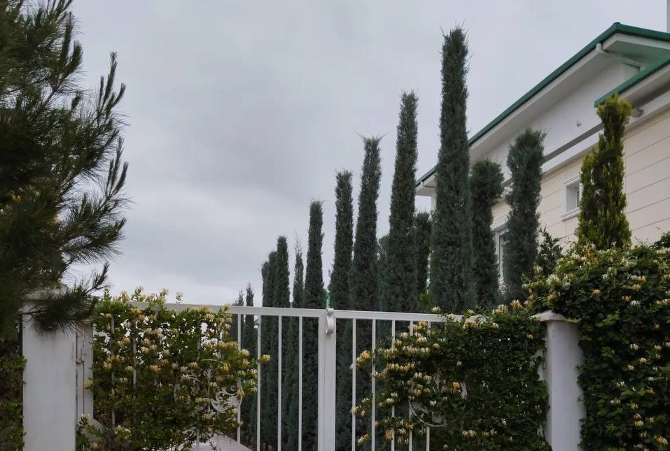

Best Quality
Our Services

"Atiyachlandyrysh Merkezi" OJSC
Voluntary mortgage insurance
The object of mortgage insurance is the property interest
of the Policyholder in receiving compensation from the
value of the insured property that the Policyholder owns,
uses or disposes of.
The insured property includes immovable property, the movement of which is impossible without commensurate damage to their purpose, including those in the ownership, economic management or management of individuals or legal entities: buildings, structures, residential buildings, apartments, other property complexes and other property classified by law Turkmenistan to real estate.
The insured events include the following events as a result of which damage was caused to the insured property:
- fire or other damage caused by fire;
- natural disasters (earthquake, underground fire, landslide, mountain landslide, lightning strike, mudflow, storm, whirlwind, hurricane, flood, flood, flooding due to rising groundwater, etc.);
- water damage from plumbing, sewerage, heating systems and fire extinguishing systems;
- falling of manned flying objects or their debris;
- damage resulting from malicious acts of third parties.
Damage from fire damage that did not arise as a result of a fire, as well as damage caused to the insured property as a result of its processing by fire, heat or other thermal effects on it for the purpose of processing it or for other purposes, are not covered by insurance and are not subject to compensation.
The list of insured events, upon the occurrence of which the Insurer is obliged to pay insurance indemnity to the Policyholder, is determined in the insurance contract.
The insured property includes immovable property, the movement of which is impossible without commensurate damage to their purpose, including those in the ownership, economic management or management of individuals or legal entities: buildings, structures, residential buildings, apartments, other property complexes and other property classified by law Turkmenistan to real estate.
The insured events include the following events as a result of which damage was caused to the insured property:
- fire or other damage caused by fire;
- natural disasters (earthquake, underground fire, landslide, mountain landslide, lightning strike, mudflow, storm, whirlwind, hurricane, flood, flood, flooding due to rising groundwater, etc.);
- water damage from plumbing, sewerage, heating systems and fire extinguishing systems;
- falling of manned flying objects or their debris;
- damage resulting from malicious acts of third parties.
Damage from fire damage that did not arise as a result of a fire, as well as damage caused to the insured property as a result of its processing by fire, heat or other thermal effects on it for the purpose of processing it or for other purposes, are not covered by insurance and are not subject to compensation.
The list of insured events, upon the occurrence of which the Insurer is obliged to pay insurance indemnity to the Policyholder, is determined in the insurance contract.

"Atiyachlandyrysh Merkezi" OJSC
Insurance of motor vehicles
The object of insurance is the property interests
associated with the possession, use and disposal of a
motor vehicle by the Insured.
By agreement of the parties, at additional sum indicated in the insurance contract the following are subject to be covered:
- accidents involving drivers and passengers in a motor vehicle;
- temporary or complete disability;
- health care costs;
- civil liability of the owner of the vehicle to third parties;
Insurance coverage does not apply to precious objects, precious metals, articles made of precious metals, precious and semiprecious stones and products made of them, film and video equipment, religious objects, manuscripts, bank notes, securities, documents and photographs that are in the vehicle as luggage.
The life and health of the passenger and (or) the driver (hereinafter the Insured) of the vehicle are subject to insurance of the driver and the passenger of the vehicle against accidents. The insurer pays the Sum Insured (insurance indemnity) upon the occurrence of the insured event specified in the insurance contract of the driver and passenger of a motor vehicle against accidents.
Upon the occurrence of an insured event specified in the insurance contract of third party liability of the owner of a motor vehicle to third parties, the harm (damage) caused to the life, health and (or) property of third parties is subject to insurance.
In accordance with the insurance contract, the Insurer reimburses harm (damage) caused by the Insured to the life, health and property of third parties as a result of an accident (collision, tipping, hitting a standing vehicle, obstacle, pedestrian, passenger on a bicycle, trolley, passenger’s fall, as well as other types of road accidents).
By agreement of the parties, at additional sum indicated in the insurance contract the following are subject to be covered:
- accidents involving drivers and passengers in a motor vehicle;
- temporary or complete disability;
- health care costs;
- civil liability of the owner of the vehicle to third parties;
Insurance coverage does not apply to precious objects, precious metals, articles made of precious metals, precious and semiprecious stones and products made of them, film and video equipment, religious objects, manuscripts, bank notes, securities, documents and photographs that are in the vehicle as luggage.
The life and health of the passenger and (or) the driver (hereinafter the Insured) of the vehicle are subject to insurance of the driver and the passenger of the vehicle against accidents. The insurer pays the Sum Insured (insurance indemnity) upon the occurrence of the insured event specified in the insurance contract of the driver and passenger of a motor vehicle against accidents.
Upon the occurrence of an insured event specified in the insurance contract of third party liability of the owner of a motor vehicle to third parties, the harm (damage) caused to the life, health and (or) property of third parties is subject to insurance.
In accordance with the insurance contract, the Insurer reimburses harm (damage) caused by the Insured to the life, health and property of third parties as a result of an accident (collision, tipping, hitting a standing vehicle, obstacle, pedestrian, passenger on a bicycle, trolley, passenger’s fall, as well as other types of road accidents).

"Atiyachlandyrysh Merkezi" OJSC
Insurance of enterprises' property
The insured - an individual - an entrepreneur without a
legal entity or a legal entity that is a party to an
insurance contract, pays an insurance premium (insurance
premium) and has an insurable interest in insuring the
object of insurance;
The following are covered by insurance:
a. buildings (industrial, administrative, social and cultural purposes, public use, etc.);
b. structures (towers, masts, units and other production and technological installations);
c. engineering and industrial technological equipment (communications, systems, devices, electronic computing equipment, machine tools, transmission and power machines, other mechanisms and devices);
d. outbuildings (garages, storage, warehouses, sheds, covered areas, fences, etc.);
e. separate premises (workshops, laboratories, classrooms, etc.);
f. unfinished construction object;
g. unfinished construction object;
h. inventory, technological equipment;
i. furnishings, furniture, decor;
j. inventory items (goods, raw materials).
Unless otherwise specified in the insurance contract, insurance does not apply to the following:
a. cash in national and foreign currency;
b. stocks, bonds and other securities;
c. manuscripts, plans, drawings and other documents, accounting and business books;
d. models, patterns, samples, forms, etc .;
e. precious metals in bars and precious stones without mounting;
f. data carriers of computer and similar systems, particularly in magnetic films and tapes, magnetic disks, memory blocks, etc .;
g. stamps, coins, banknotes and bonds, drawings, paintings, sculptures or other collections, or works of art;
h. explosive and explosive substances (gasoline, diesel fuel, oil, gas, etc.);
i. goods in storage or on commission;
j. vehicles, mobile, construction, agricultural or other vehicles;
k. property located in the insured premises, but not property belonging to the insured;
l. farm animals, perennial plants and crops;
m. buildings and structures, structural elements and engineering systems that are in emergency condition, as well as property located in them;
n. property located in a zone threatened by landslides, landslides, floods or other natural disasters, as well as in a military zone from the moment of the announcement of such a threat in the prescribed manner, if such an announcement was made before concluding an insurance contract;
o. other property withdrawn from turnover or limited in turnover.
Insurance of items listed above may be concluded by agreement of the parties and must be drawn up with special amendments to the insurance contract (insurance certificate (policy)).
The following are covered by insurance:
a. buildings (industrial, administrative, social and cultural purposes, public use, etc.);
b. structures (towers, masts, units and other production and technological installations);
c. engineering and industrial technological equipment (communications, systems, devices, electronic computing equipment, machine tools, transmission and power machines, other mechanisms and devices);
d. outbuildings (garages, storage, warehouses, sheds, covered areas, fences, etc.);
e. separate premises (workshops, laboratories, classrooms, etc.);
f. unfinished construction object;
g. unfinished construction object;
h. inventory, technological equipment;
i. furnishings, furniture, decor;
j. inventory items (goods, raw materials).
Unless otherwise specified in the insurance contract, insurance does not apply to the following:
a. cash in national and foreign currency;
b. stocks, bonds and other securities;
c. manuscripts, plans, drawings and other documents, accounting and business books;
d. models, patterns, samples, forms, etc .;
e. precious metals in bars and precious stones without mounting;
f. data carriers of computer and similar systems, particularly in magnetic films and tapes, magnetic disks, memory blocks, etc .;
g. stamps, coins, banknotes and bonds, drawings, paintings, sculptures or other collections, or works of art;
h. explosive and explosive substances (gasoline, diesel fuel, oil, gas, etc.);
i. goods in storage or on commission;
j. vehicles, mobile, construction, agricultural or other vehicles;
k. property located in the insured premises, but not property belonging to the insured;
l. farm animals, perennial plants and crops;
m. buildings and structures, structural elements and engineering systems that are in emergency condition, as well as property located in them;
n. property located in a zone threatened by landslides, landslides, floods or other natural disasters, as well as in a military zone from the moment of the announcement of such a threat in the prescribed manner, if such an announcement was made before concluding an insurance contract;
o. other property withdrawn from turnover or limited in turnover.
Insurance of items listed above may be concluded by agreement of the parties and must be drawn up with special amendments to the insurance contract (insurance certificate (policy)).

"Atiyachlandyrysh Merkezi" OJSC
Voluntary cargo insurance
The object of insurance is the property interests of the
Insured at the time of the conclusion of the insurance
contract.
The object of insurance can be: cargo, commission, freight and other costs associated with the carriage of goods; losses related to the carriage of goods caused to the Insured as a result of the occurrence of an insured event are the object of insurance, if this is provided for by the insurance contract.
The specific object of insurance is indicated in the Application for voluntary cargo insurance (Appendix No. 1), drawn up by the Insured, and in the Insurance certificate-policy for voluntary cargo insurance (Appendix No. 2).
If necessary, a cargo inventory is attached to the insurance contract (Appendix No. 1-a).
Insurance for the transportation of special cargo: precious metals and stones (jewelry, gold, platinum and platinum group metals in bullion or scrap), expensive furs, banknotes, coins, securities, currency values, stamps, documents, items with a special artistic or historical value, personal belongings and property, luggage (regardless of the type of transport) is carried out on the basis of an additional agreement.
Insurance of goods with specific physical and chemical properties (flammable, explosive, dangerous goods), oversized installations, offshore drilling rigs, ships on the decks of sea vessels, cargo, especially prone to battle and scrap, is also carried out on the basis of an additional agreement.
The object of insurance can be: cargo, commission, freight and other costs associated with the carriage of goods; losses related to the carriage of goods caused to the Insured as a result of the occurrence of an insured event are the object of insurance, if this is provided for by the insurance contract.
The specific object of insurance is indicated in the Application for voluntary cargo insurance (Appendix No. 1), drawn up by the Insured, and in the Insurance certificate-policy for voluntary cargo insurance (Appendix No. 2).
If necessary, a cargo inventory is attached to the insurance contract (Appendix No. 1-a).
Insurance for the transportation of special cargo: precious metals and stones (jewelry, gold, platinum and platinum group metals in bullion or scrap), expensive furs, banknotes, coins, securities, currency values, stamps, documents, items with a special artistic or historical value, personal belongings and property, luggage (regardless of the type of transport) is carried out on the basis of an additional agreement.
Insurance of goods with specific physical and chemical properties (flammable, explosive, dangerous goods), oversized installations, offshore drilling rigs, ships on the decks of sea vessels, cargo, especially prone to battle and scrap, is also carried out on the basis of an additional agreement.

"Atiyachlandyrysh Merkezi" OJSC
Insurance of residential buildings owned by citizens on
property rights
Objects of insurance can be residential premises belonging
to the Insured (Beneficiary) on the right of private
property, which include detached residential buildings, or
an apartment in a multi-family residential building,
including all structural elements, as well as elements of
decoration and equipment: walls and partitions ( pasted
wallpaper and other coatings); floors, ceiling, doors with
upholstery; window and door frames and frames; glass and
stained glass; door handles; door locks; electric calls;
electrical wiring and electricity meters, plumbing
equipment; heating installations and others.
Under the Rules detached houses, residential premises or apartments located in a multi-apartment residential building which are:
a. recognized in established order as unsuitable for occupation or in emergency condition;
b. located in areas dangerous for living that are threatened by landslides, floods or other natural disasters from the moment of announcement, in the prescribed manner of such a threat or compiled by the competent authorities (hydrometeorological service and others) of the relevant document (act, opinion, etc.) confirming the threat;
c. not taken into operation in accordance with the regulatory legal acts of Turkmenistan.
Under the Rules detached houses, residential premises or apartments located in a multi-apartment residential building which are:
a. recognized in established order as unsuitable for occupation or in emergency condition;
b. located in areas dangerous for living that are threatened by landslides, floods or other natural disasters from the moment of announcement, in the prescribed manner of such a threat or compiled by the competent authorities (hydrometeorological service and others) of the relevant document (act, opinion, etc.) confirming the threat;
c. not taken into operation in accordance with the regulatory legal acts of Turkmenistan.
"Atiyachlandyrysh Merkezi" OJSC
Voluntary collective insurance against accidents of
employees at the expense of legal entities
The object of insurance is the personal interests of the
Insured person associated with harm to life or health as a
result of an accident that occurred during the performance
of his job duties, as well as on the way to the place of
work or back.
An insured event is an event or circumstance that occurred during the validity period of the insurance contract, as a result of which harm was caused to the life or health of the Insured person during the performance of his job duties, as well as on the way to work or back.
The insured event also includes:
a. pathological childbirth or ectopic pregnancy, which caused the removal of organs (uterus, both or a single fallopian tube, ovaries);
b. accidental acute poisoning with poisonous plants, chemicals (industrial or household origin), poor-quality food products, with the exception of food toxicoinfection (salmonellosis, dysentery, etc.), drugs, asphyxia (suffocation), tick-borne or post-vaccination encephalitis (encephalomyelitis ), electric shock (atmospheric electricity), snake bites, poisonous insects, tetanus, botulism.
Events cannot be recognized as insurance events and the harm caused to the Insured person is not subject to compensation as a result of:
a. the commission of actions in which the bodies of inquiry, preliminary investigation or the court (kazyet) have established signs of an intentional crime;
b. alcoholic, narcotic or psychotropic intoxication;
c. suicide (attempted suicide), except for cases when the Insured person was brought to such a state by unlawful actions of third parties;
d. deliberate infliction of bodily harm by the Insured person;
e. deliberate actions of the Insured (or the alleged heirs of the Insured person), as a result of which the death of the Insured person occurred.
An insured event is an event or circumstance that occurred during the validity period of the insurance contract, as a result of which harm was caused to the life or health of the Insured person during the performance of his job duties, as well as on the way to work or back.
The insured event also includes:
a. pathological childbirth or ectopic pregnancy, which caused the removal of organs (uterus, both or a single fallopian tube, ovaries);
b. accidental acute poisoning with poisonous plants, chemicals (industrial or household origin), poor-quality food products, with the exception of food toxicoinfection (salmonellosis, dysentery, etc.), drugs, asphyxia (suffocation), tick-borne or post-vaccination encephalitis (encephalomyelitis ), electric shock (atmospheric electricity), snake bites, poisonous insects, tetanus, botulism.
Events cannot be recognized as insurance events and the harm caused to the Insured person is not subject to compensation as a result of:
a. the commission of actions in which the bodies of inquiry, preliminary investigation or the court (kazyet) have established signs of an intentional crime;
b. alcoholic, narcotic or psychotropic intoxication;
c. suicide (attempted suicide), except for cases when the Insured person was brought to such a state by unlawful actions of third parties;
d. deliberate infliction of bodily harm by the Insured person;
e. deliberate actions of the Insured (or the alleged heirs of the Insured person), as a result of which the death of the Insured person occurred.

"Atiyachlandyrysh Merkezi" OJSC
Health insurance of citizens travelling abroad
1. The object of insurance is the Insured’s (Insured)
personal interests related to harm to his life or health,
occurred as a result of an insured event within insurance
territory.
2. The insured accident is a sudden illness, accident, as well as the death of the Insured person, which occurred during the validity period of the insurance contract, during the stay of the Insured person in the insurance territory. The insured person (in the event of his death - his heir (assignee)) is required to provide evidence regarding the amount of expenses incurred by the Insurer for expenses incurred due to the occurrence of the insured event.
2. The insured accident is a sudden illness, accident, as well as the death of the Insured person, which occurred during the validity period of the insurance contract, during the stay of the Insured person in the insurance territory. The insured person (in the event of his death - his heir (assignee)) is required to provide evidence regarding the amount of expenses incurred by the Insurer for expenses incurred due to the occurrence of the insured event.

"Atiyachlandyrysh Merkezi" OJSC
Insurance of construction erection works
1. Objects of insurance are:
a. objects of construction works, including buildings, structures and other objects, building materials and installations, as well as other property provided in the design and estimate documentation and which is the subject or means of the construction works;
b. installation work, including objects under construction, facilities to be equipped, as well as other property provided in the design and estimate documentation and which is the subject or means of construction;
c. construction site equipment: temporary structures and facilities, warehouses, fences, scaffolding, forms (formwork), engineering structures and others;
d. construction equipment and mechanisms: bulldozers, excavators, graders, scrapers, road rollers, stamping machines, asphalt pavers, road mills, cranes and hoists, cargo loaders, concrete mixers, concrete pumps, compressors and others;
e. the cost of clearing the area from debris and debris removal, if they are caused by the harm (damage) occurred in an event to be payable in accordance with the terms of the insurance contract. The costs of clearing are considered to be such costs that must be incurred after the insured event in order to bring the territory of the construction site into a condition suitable for carrying out restoration work.
2. During construction and installation works both the insurance of third party liability and the insurance of warranty period can be provided.
a. objects of construction works, including buildings, structures and other objects, building materials and installations, as well as other property provided in the design and estimate documentation and which is the subject or means of the construction works;
b. installation work, including objects under construction, facilities to be equipped, as well as other property provided in the design and estimate documentation and which is the subject or means of construction;
c. construction site equipment: temporary structures and facilities, warehouses, fences, scaffolding, forms (formwork), engineering structures and others;
d. construction equipment and mechanisms: bulldozers, excavators, graders, scrapers, road rollers, stamping machines, asphalt pavers, road mills, cranes and hoists, cargo loaders, concrete mixers, concrete pumps, compressors and others;
e. the cost of clearing the area from debris and debris removal, if they are caused by the harm (damage) occurred in an event to be payable in accordance with the terms of the insurance contract. The costs of clearing are considered to be such costs that must be incurred after the insured event in order to bring the territory of the construction site into a condition suitable for carrying out restoration work.
2. During construction and installation works both the insurance of third party liability and the insurance of warranty period can be provided.

"Atiyachlandyrysh Merkezi" OJSC
Insurance of third party liability
Civil liability to third parties - liability to
individuals or legal entities for harm to life, health and
(or) damage to property as a result of an insured event
that occurred in the course of the Insured's business
activities specified in the insurance contract.
The object of insurance is the property interests of the Insured, associated with the obligations arising from damage to life, health and (or) damage to property of third parties, in connection with the Insured's business activities specified in the insurance contract.
Under the insurance contract, the risk of third party liability may be insured for the followings:
-harm caused to the life and health of third parties;
-damage to the property of third parties;
-harm (damage) caused to the life, health and property of third parties.
The insured amount under the insurance contract is established by agreement between the Insured and the Insurer within the limit of liability for each type of risk (causing harm to life, health and (or) damage to property of third parties).
The object of insurance is the property interests of the Insured, associated with the obligations arising from damage to life, health and (or) damage to property of third parties, in connection with the Insured's business activities specified in the insurance contract.
Under the insurance contract, the risk of third party liability may be insured for the followings:
-harm caused to the life and health of third parties;
-damage to the property of third parties;
-harm (damage) caused to the life, health and property of third parties.
The insured amount under the insurance contract is established by agreement between the Insured and the Insurer within the limit of liability for each type of risk (causing harm to life, health and (or) damage to property of third parties).

"Atiyachlandyrysh Merkezi" OJSC
Voluntary civil insurance employer's liability.
The object of insurance is the interests of the Employer
in connection with his obligation to compensate for damage
to life and health The injured worker or workers (the
injured or persons) as a result of accidents and/or
occupational diseases while performing work. labor
responsibilities in production. According to the rules
voluntary civil liability insurance employer the
occurrence of employer liability for causing harm to the
life and health of the insured employee or employees
(insured person or persons) in as a result of an accident
and (or) professional illness at work is considered an
insured event. At upon the occurrence of an insured event,
the insurer has the right claim the amount of insurance
money (insurance compensation) and fulfill other
obligations stipulated by the contract insurance or the
legislation of Turkmenistan, and a corresponding
obligation arises for the insurer. Evidence of the
occurrence of an insured situation is determined based on
relevant documents and other information, not raising
doubts about its reliability, by court decisions and other
institutions, as well as, if necessary, at based on expert
reports.
Cannot be recognized as an insured event and are not subject to compensation for harm caused to the Insured:
1. intentional actions determined by the bodies of inquiry, preliminary investigation or court as evidence crimes;
2. The harassed employee commits illegal activities such as theft, petty hooliganism, etc.;
3. Intoxication due to influence of alcohol, narcotic and psychotropic substances;
4. Self-harm (attempted self-harm), this does not apply to cases of persecution of a person in as a result of illegal actions of third parties;
5. Violation of labor protection rules by the persecuted employee;
6. actions of the harassed employee that interfere with work others, weakening the progress of work or participating in other types of production violations;
7. injured the employee became ill in a situation unrelated to the influence working conditions (based on the results of medical institutions);
8. the harassed worker deliberately injures himself bodily harm, commits suicide, attempts commit suicide, loses consciousness;
9. arriving at work by vehicle, not belonging to the enterprise, and returning after work home or the employee’s non-participation in contractual relations;
10. exposure to a nuclear explosion, radiation or radioactive poisoning;
11. Different kinds military and terrorist acts, as well as mass riots and their consequences;
12. Sports and other entertaining games.
Cannot be recognized as an insured event and are not subject to compensation for harm caused to the Insured:
1. intentional actions determined by the bodies of inquiry, preliminary investigation or court as evidence crimes;
2. The harassed employee commits illegal activities such as theft, petty hooliganism, etc.;
3. Intoxication due to influence of alcohol, narcotic and psychotropic substances;
4. Self-harm (attempted self-harm), this does not apply to cases of persecution of a person in as a result of illegal actions of third parties;
5. Violation of labor protection rules by the persecuted employee;
6. actions of the harassed employee that interfere with work others, weakening the progress of work or participating in other types of production violations;
7. injured the employee became ill in a situation unrelated to the influence working conditions (based on the results of medical institutions);
8. the harassed worker deliberately injures himself bodily harm, commits suicide, attempts commit suicide, loses consciousness;
9. arriving at work by vehicle, not belonging to the enterprise, and returning after work home or the employee’s non-participation in contractual relations;
10. exposure to a nuclear explosion, radiation or radioactive poisoning;
11. Different kinds military and terrorist acts, as well as mass riots and their consequences;
12. Sports and other entertaining games.

"Atiyachlandyrysh Merkezi" OJSC
Voluntary insurance of funds water transport
1.The object of insurance is the property interests of the
Insured at the time of the conclusion of the insurance
contract.
2.Insurance interest is a measure of material interest in insurance of the object of insurance.
3. Property interest is expressed in obtaining compensation from the value of the insurance object, which the Policyholder owns, uses and disposes, as well as compensation by the Policyholder for harm caused to life, health and / or damage to the property of an individual, as well as damage to the property of a legal entity hereinafter - third parties ).
4. The object of insurance is the standard structure of a sea (river) vessel: hull, engines, equipment and equipment of the vessel, excluding fuel and lubricants and other consumables.
5. Under the contract, sea (river) vessels can be insured, depending on their purpose, navigation area, building material, type of propulsion and engine, subdivided into groups:
- by appointment - trade, service, sports, fishing, passenger, pleasure (lighters, tugs, ferries, barges, boats, etc.).
Merchant ships, depending on the nature of the transported goods, are divided into:
-Dry cargo, designed for the transportation of dry cargo, packaged and unpackaged (refrigerators, timber trucks, grain carriers, container carriers, package carts, etc.);
- in bulk, intended for the transportation of liquid cargo in bulk (tankers, etc.).
6. Not accepted for insurance:
6.1. means of water transport, structural elements (engines, hull, structures, navigation and other ship devices, machinery and equipment) of which are in emergency condition;
6.2. Means of water transport that are not included in the state ship register and do not have an officially registered corresponding ice class;
6.3. Property located on water vessels that does not belong to the Insured and has not been received by him as a result of contractual relations.
2.Insurance interest is a measure of material interest in insurance of the object of insurance.
3. Property interest is expressed in obtaining compensation from the value of the insurance object, which the Policyholder owns, uses and disposes, as well as compensation by the Policyholder for harm caused to life, health and / or damage to the property of an individual, as well as damage to the property of a legal entity hereinafter - third parties ).
4. The object of insurance is the standard structure of a sea (river) vessel: hull, engines, equipment and equipment of the vessel, excluding fuel and lubricants and other consumables.
5. Under the contract, sea (river) vessels can be insured, depending on their purpose, navigation area, building material, type of propulsion and engine, subdivided into groups:
- by appointment - trade, service, sports, fishing, passenger, pleasure (lighters, tugs, ferries, barges, boats, etc.).
Merchant ships, depending on the nature of the transported goods, are divided into:
-Dry cargo, designed for the transportation of dry cargo, packaged and unpackaged (refrigerators, timber trucks, grain carriers, container carriers, package carts, etc.);
- in bulk, intended for the transportation of liquid cargo in bulk (tankers, etc.).
6. Not accepted for insurance:
6.1. means of water transport, structural elements (engines, hull, structures, navigation and other ship devices, machinery and equipment) of which are in emergency condition;
6.2. Means of water transport that are not included in the state ship register and do not have an officially registered corresponding ice class;
6.3. Property located on water vessels that does not belong to the Insured and has not been received by him as a result of contractual relations.

"Atiyachlandyrysh Merkezi" OJSC
Voluntary civil liability insurance carrier (freight
forwarder)
Insurants - legal entities and individuals (entrepreneurs)
carrying out the transportation and forwarding of goods,
transportation of passengers by road, water, air or rail
on the basis of an official permission obtained in the
manner prescribed by law for the Insured to carry out
professional activities of the Insured as a carrier /
forwarder, who are the owners (owners, users, explants,
renters) of the vehicle who have entered into an insurance
contract.
The object of insurance under contracts concluded on the basis of these Rules is the property interests of the insured person related to his obligation, in the manner prescribed by law, to compensate property damage or harm to life and health caused to third parties (Beneficiaries), when the Insured fulfills its obligations under the contracts transportation, including international, and / or freight forwarding, as well as with compensation to the Insured of judicial and extrajudicial costs associated with the onset of his liability for causing harm to third parties.
The Insurer's obligation to pay insurance compensation occurs if:
a. damage to the property interests of the Beneficiary was caused during the period of time specified in the insurance contract;
b. damage to the property interests of the Beneficiary was caused as a result of the production activities of the Insured.
The object of insurance under contracts concluded on the basis of these Rules is the property interests of the insured person related to his obligation, in the manner prescribed by law, to compensate property damage or harm to life and health caused to third parties (Beneficiaries), when the Insured fulfills its obligations under the contracts transportation, including international, and / or freight forwarding, as well as with compensation to the Insured of judicial and extrajudicial costs associated with the onset of his liability for causing harm to third parties.
The Insurer's obligation to pay insurance compensation occurs if:
a. damage to the property interests of the Beneficiary was caused during the period of time specified in the insurance contract;
b. damage to the property interests of the Beneficiary was caused as a result of the production activities of the Insured.

"Atiyachlandyrysh Merkezi" OJSC
Voluntary professional liability insurance
Insured - a capable individual or legal entity that is a
party to the insurance contract or is such in accordance
with the legislation of Turkmenistan, pays an insurance
premium (premium) and has an insurable interest in
insuring the object of insurance;
Professional liability - The obligation of the policyholder to compensate for harm caused to the life, health and / or property of third parties, as a result of negligence or lack of experience, in the course of their professional activities;
The object of insurance in accordance with these conditions is the personal property interests of the Insured that do not contradict the legislation of Turkmenistan and these rules, related to his obligation to compensate for harm unintentionally caused to the life, health and / or property of third parties in connection with the implementation of professional activities (performance of obligations) (for all types of professional activities) specified in the insurance contract.
By additional conditions for insurance of a specific type of professional activity, the definition of the object of insurance can be clarified or supplemented depending on the specific type of professional activity.
Professional liability - The obligation of the policyholder to compensate for harm caused to the life, health and / or property of third parties, as a result of negligence or lack of experience, in the course of their professional activities;
The object of insurance in accordance with these conditions is the personal property interests of the Insured that do not contradict the legislation of Turkmenistan and these rules, related to his obligation to compensate for harm unintentionally caused to the life, health and / or property of third parties in connection with the implementation of professional activities (performance of obligations) (for all types of professional activities) specified in the insurance contract.
By additional conditions for insurance of a specific type of professional activity, the definition of the object of insurance can be clarified or supplemented depending on the specific type of professional activity.

"Atiyachlandyrysh Merkezi" OJSC
Voluntary insurance drilling operations
Objects of insurance are oil, gas, geothermal, water and
other wells where:
- work is carried out on drilling, deepening, maintenance, repair, restoration or preparation for the start of production - until the completion of these works or until the termination of insurance for other reasons;
- oil, natural gas or other liquid or gaseous minerals are being extracted;
- production of oil, natural gas or other minerals is temporarily stopped for any reason, and the well is plugged or otherwise mothballed;
- production of oil, natural gas or other liquid or gaseous minerals is stopped after the oil or gas-bearing layers feeding the well are depleted.
- costs associated with eliminating the consequences of damage caused to the natural environment, including pollution of air, water, soil and subsoil in the contract territory, in its depths.
Under an insurance contract, the risk of civil liability can be insured:
- for harm caused to the life and health of third parties;
- for damage caused to the property of third parties.
The Insured is obliged to inform the Insurer about the condition (in accordance with clause 7.) of the wells applied for insurance, as well as for the period of which of the above works the insurance is being concluded.
Insurance coverage for drilling equipment is also provided. Insurance applies to the following specified in the insurance contract:
- drilling equipment, equipment for the operation and maintenance of oil and gas wells, as well as derricks, cranes, boilers, boilers, drill pipes, tools, spare parts, units, accessories and accessories for such equipment, as well as other items used by the Insured for such drilling operations;
- mobile equipment, rolling stock, cement, drilling fluid or drilling mixtures, chemicals, casing pipes, access roads, drawings, plans and documents, as well as property located in warehouses. The property named in this paragraph is considered insured only if it is specifically provided for in the insurance contract.
- work is carried out on drilling, deepening, maintenance, repair, restoration or preparation for the start of production - until the completion of these works or until the termination of insurance for other reasons;
- oil, natural gas or other liquid or gaseous minerals are being extracted;
- production of oil, natural gas or other minerals is temporarily stopped for any reason, and the well is plugged or otherwise mothballed;
- production of oil, natural gas or other liquid or gaseous minerals is stopped after the oil or gas-bearing layers feeding the well are depleted.
- costs associated with eliminating the consequences of damage caused to the natural environment, including pollution of air, water, soil and subsoil in the contract territory, in its depths.
Under an insurance contract, the risk of civil liability can be insured:
- for harm caused to the life and health of third parties;
- for damage caused to the property of third parties.
The Insured is obliged to inform the Insurer about the condition (in accordance with clause 7.) of the wells applied for insurance, as well as for the period of which of the above works the insurance is being concluded.
Insurance coverage for drilling equipment is also provided. Insurance applies to the following specified in the insurance contract:
- drilling equipment, equipment for the operation and maintenance of oil and gas wells, as well as derricks, cranes, boilers, boilers, drill pipes, tools, spare parts, units, accessories and accessories for such equipment, as well as other items used by the Insured for such drilling operations;
- mobile equipment, rolling stock, cement, drilling fluid or drilling mixtures, chemicals, casing pipes, access roads, drawings, plans and documents, as well as property located in warehouses. The property named in this paragraph is considered insured only if it is specifically provided for in the insurance contract.

"Atiyachlandyrysh Merkezi" OJSC
Voluntary accident insurance
The object of insurance is personal interests related to
the life, health and working capacity of the Insured
Person.
Insured person - an individual whose personal interests related to life, health and work ability are the object of insurance, in favor of whom the insurance contract has been concluded.
Policyholders who are natural persons may be capable natural persons aged 18 and over, provided that by the day of the end of the insurance period the age does not exceed 75 years.
Parents (adoptive parents), other relatives of the child, his or her guardian or guardian may conclude accident insurance contracts in favor of children aged 1 year and older, provided that by the day of the end of the insurance period, the age does not exceed 18 years.
Insured person - an individual whose personal interests related to life, health and work ability are the object of insurance, in favor of whom the insurance contract has been concluded.
Policyholders who are natural persons may be capable natural persons aged 18 and over, provided that by the day of the end of the insurance period the age does not exceed 75 years.
Parents (adoptive parents), other relatives of the child, his or her guardian or guardian may conclude accident insurance contracts in favor of children aged 1 year and older, provided that by the day of the end of the insurance period, the age does not exceed 18 years.